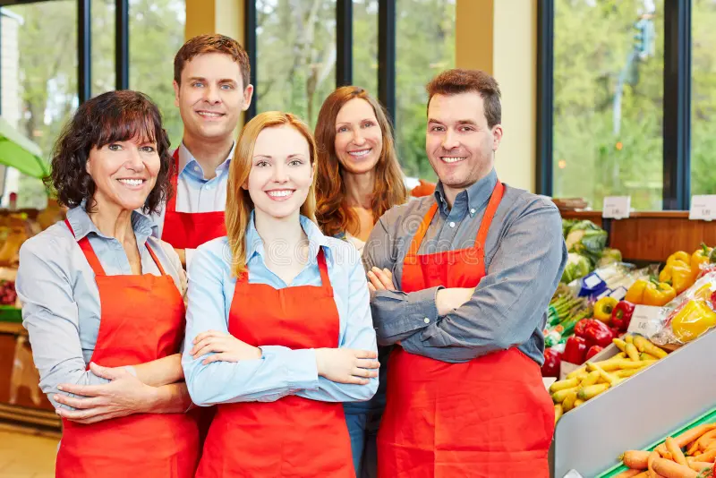

Our Story
Founded in 2020 in KwaZulu-Natal, The Green Basket began as a small family-owned initiative to bring healthier, chemical-free food to our community. Today, we proudly support over 30 local farmers and provide organic groceries to families across South Africa.
Our Mission
Our mission is to supply the community with sustainable, organic, and fresh food items. We aim to lessen our environmental impact, encourage healthier living, and support small-scale farmers through fair trade practices.
Our Vision
To become the most reputable organic food shop in the region, renowned for premium products, ethical sourcing, and a strong dedication to environmentally friendly living.
Our Values
- Sustainability in everything we do
- Fair trade and community support
- Promoting healthy lifestyles
- Respect for nature and biodiversity
Our Team
Behind The Green Basket is a passionate team of dedicated individuals who work tirelessly to bring fresh, organic products to your table. Each member of our team shares the same values of sustainability, health, and community support.
Frequently Asked Questions
We currently offer pickup in-store and are piloting local delivery in Durban.
Yes, sourced from vetted local farms practicing organic methods.
Use the Enquiry page and choose Volunteer or Sponsorship. We’ll get back to you.
Explore our fresh produce.